User Guide — v1.0
The Telco Partner Skills (TPS) Framework is a web application for building partner-specific OpenShift Telco RDS knowledge bases. It aggregates data from Jira, SharePoint, and direct entry, then generates tailored OpenAI Architect skills that give the AI full partner context.
Each partner gets an isolated knowledge base covering support exception (ECOPS) tickets, deviation domains, release mappings, operator version pins, curated knowledge entries, learned documents, and research topics. When you generate a skill, all of this is packaged into a OpenAI Architect skill directory that the embedded Architect terminal — or any OpenAI Architect session — can use.
graph LR
subgraph Sources["Data Sources"]
direction TB
Jira["Jira Cloud"]
SP["SharePoint"]
OCP["OpenShift API"]
end
subgraph TPS["TPS Framework"]
direction TB
UI["Web UI"]
API["REST API"]
DB[("SQLite DB")]
Gen["Skill Generator"]
end
subgraph Output["Output"]
direction TB
Skill["Generated Skill"]
Term["Architect Terminal"]
end
Jira --> API
SP --> API
OCP --> API
UI --> API
API --> DB
DB --> Gen
Gen --> Skill
Skill --> Term
style Sources fill:#e8f0fe,stroke:#4285f4,stroke-width:2px
style TPS fill:#f9f9f9,stroke:#c00,stroke-width:2px
style Output fill:#e8f5e9,stroke:#4caf50,stroke-width:2px
git clone <repo-url>
cd tps_framework
pip install -r requirements.txt
./scripts/start.shOpen http://localhost:8771 in your browser.
| Variable | Purpose | Default |
|---|---|---|
TPS_SECRET | Password for web UI access | none (no auth) |
TPS_MASTER_KEY | Fernet key for encrypting credentials at rest | none (plaintext) |
TPS_HOST | Bind address | 127.0.0.1 |
TPS_PORT | Listen port | 8771 |
TPS_WORKSPACE | Working directory for topics and research | ~/tps-workspace |
This section walks through the typical workflow from first launch to using a generated skill.
flowchart LR
A["Start App"] --> B["Create
Partner"]
B --> C["Configure
Jira"]
C --> D["Import
Tickets"]
D --> E["Add
Knowledge"]
E --> F["Generate
Skill"]
F --> G["Install
Skill"]
G --> H["Use
Architect"]
style A fill:#e8f5e9,stroke:#4caf50
style F fill:#fff3e0,stroke:#ff9800
style H fill:#e3f2fd,stroke:#2196f3
Open the Dashboard — navigate to http://localhost:8771. You'll see the Partners page. If this is a fresh install, there are no partners yet.
Open Settings — click the Settings button (gear icon) in the top-right of the dashboard.
Add a Partner — in the Settings modal, scroll to "Add Partner". Enter the partner name and click Create. The page reloads with a new partner card on the dashboard.
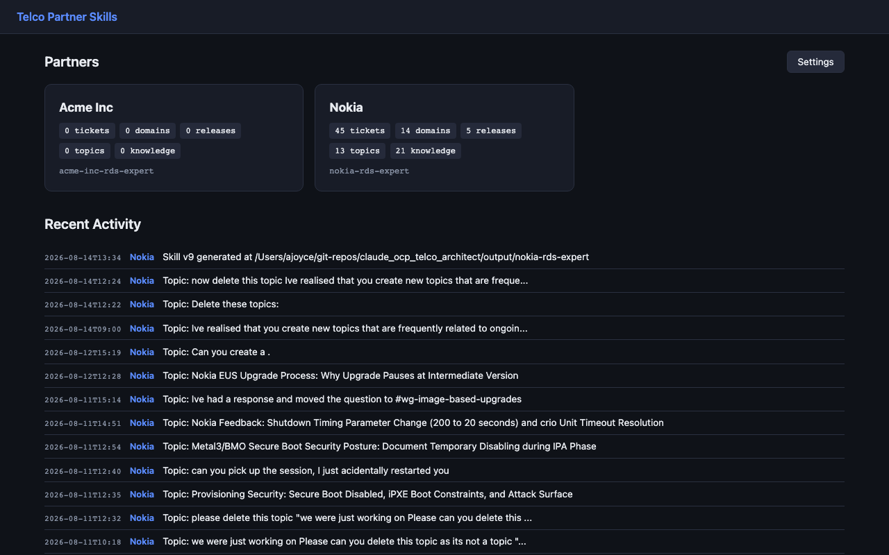
Open the Partner Page — click the partner card to navigate to the partner detail page.
Open Jira Settings — on the partner page, click the config dropdown (gear icon) and select Jira Settings.
Choose a connection mode:
your-site.atlassian.net); there is no API token. Live Jira access happens through the Architect terminal, so each user must first connect and authenticate the Atlassian MCP server in their own OpenAI Architect — see 3.2.1 below. This one-time OAuth step is where you actually authenticate against Jira.OpenAI Architect-credentials). In API Key mode, the API token is stored in the TPS database, encrypted with TPS_MASTER_KEY when set.
MCP mode needs the Atlassian Remote MCP server configured in each user's OpenAI Architect. Credentials are per-user and per-machine — there is nothing to copy between colleagues. Follow Atlassian's Get started with the Atlassian Remote MCP Server guide, or the steps below.
Register the server — in a terminal, run:
Configure the OpenAI Jira tool --transport http atlassian https://mcp.atlassian.com/v2/mcpThis is the current v2 streamable-HTTP endpoint. (An older atlassian-rovo registration using the v1 SSE endpoint https://mcp.atlassian.com/v1/sse also still works — either is fine, but new setups should use v2.)
Authenticate — start a OpenAI Architect session and run /mcp, select atlassian, and choose Authenticate. A browser opens for the Atlassian OAuth 2.1 login — sign in with your Atlassian account and approve access. (Authentication also triggers automatically the first time a Jira tool is used.) Tokens refresh automatically after this.
Verify — run /mcp again; atlassian should show as connected. The MCP acts with your existing Atlassian permissions, so you can only see and change what your account already can.
Set the project key and version prefix — the project key (e.g. ECOPS) determines which Jira project to query. The version prefix filters fix versions to your partner's releases.
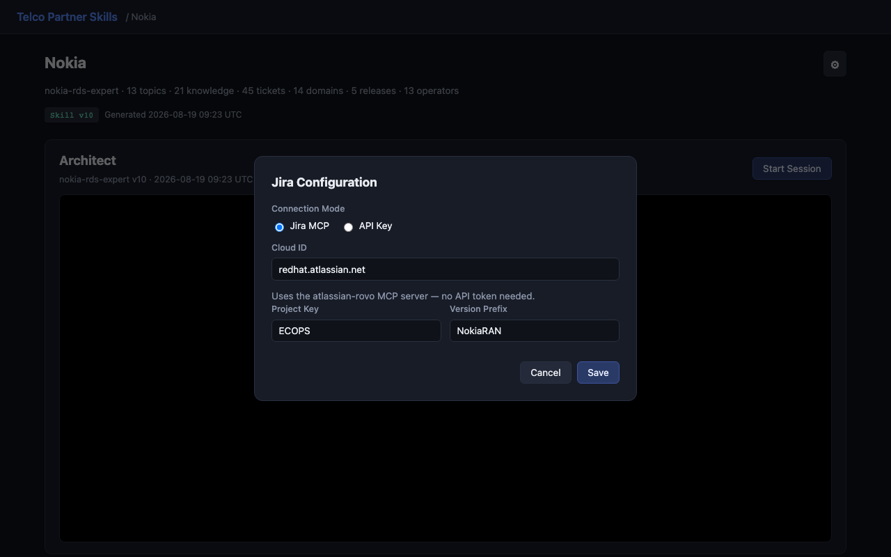
Sync from Jira — click the config dropdown and select Sync from Jira. A progress toast shows while tickets are imported.
Review imported tickets — switch to the ECOPS Tickets tab. Tickets appear with their key, summary, resolution, and any release/domain assignments from Jira.
Assign domains — use the inline domain dropdown on each ticket to categorise it. You can also click Auto-suggest from tickets on the Domains tab to create domain entries from ticket summaries.
The partner detail page organises data into tabbed panels. Click any tab to switch views. The active tab is preserved in the URL hash so bookmarks and page refreshes return to the same tab.
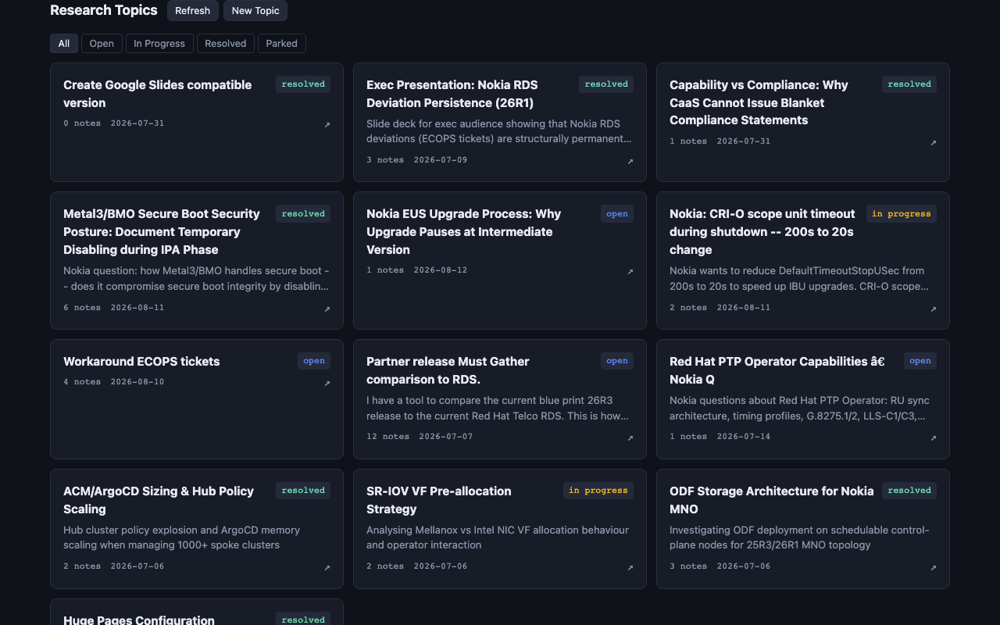
Support exception tickets imported from Jira or added manually. Each ticket has a key (e.g. ECOPS-123), summary, resolution status, and optional release and domain assignments.
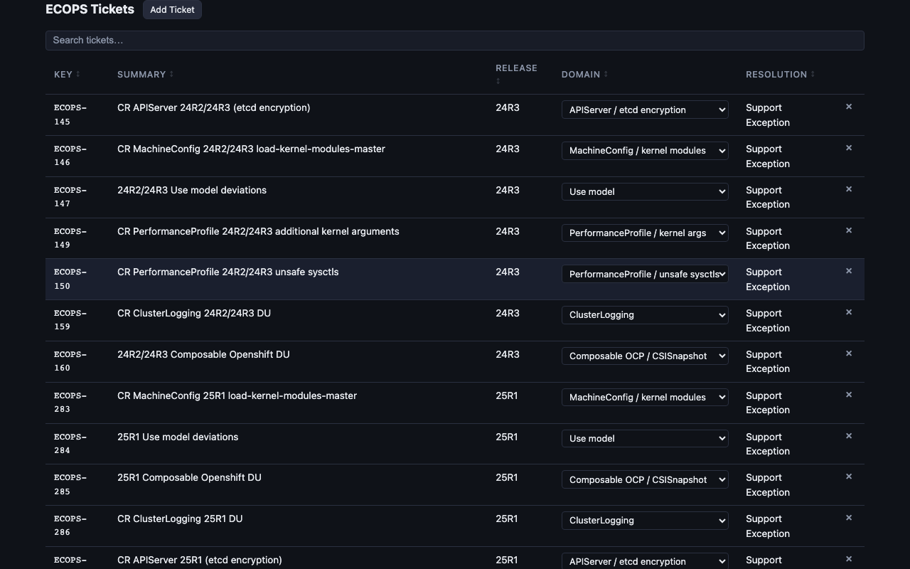
Domains group ECOPS tickets by technical area (e.g. networking, storage, cluster-logging). They appear in the generated skill's support exceptions reference, organising tickets by domain for quick lookup.
Releases map partner release names to OCP versions with lifecycle dates. The generated skill uses this data to build release-specific operator tables and lifecycle information.
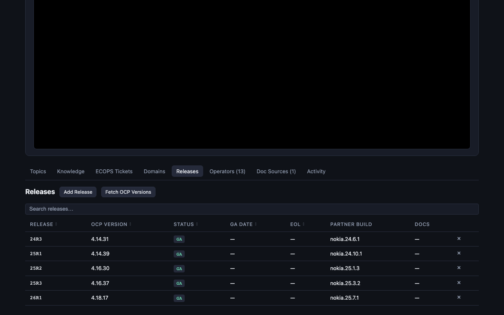
Operators track which OLM operators the partner deploys, their channels, versions, and deployment status. Each operator can have per-release version pins — recording which exact version is required for each partner release.
The knowledge base stores curated facts about the partner's architecture, configuration, and constraints. Entries are categorised and have a review status.
| Category | Use For |
|---|---|
| Configuration | Partner-specific config choices (e.g. "Uses bond0 for SRIOV interfaces") |
| Architecture | Architectural decisions (e.g. "SNO deployment with compact control plane") |
| Limitation | Known constraints or restrictions |
| Validated Finding | Facts confirmed through research or testing |
| Non-Negotiable | Hard requirements that must always be met |
stateDiagram-v2
[*] --> Pending : new entry
Pending --> Confirmed : review & confirm
Pending --> Rejected : reject
Confirmed --> Outdated : mark outdated
Rejected --> [*]
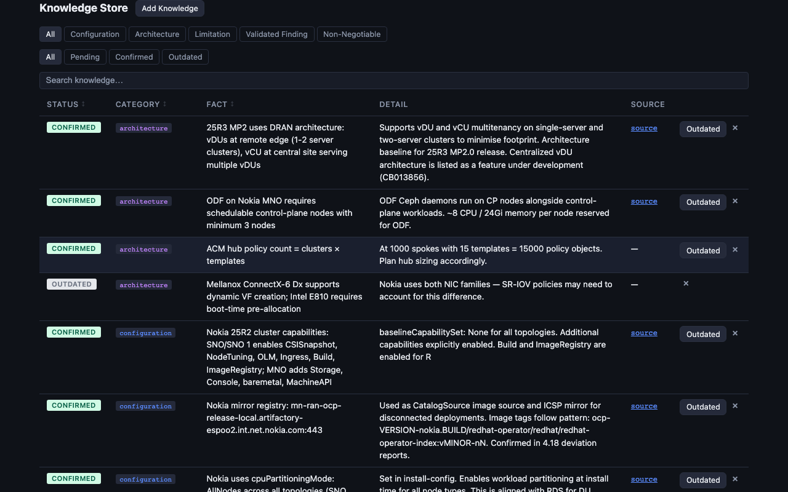
Connect SharePoint sites or web pages containing partner architecture documents. TPS can browse folder structures, learn documents (extracting content into the knowledge pipeline), and track what's been processed.
flowchart LR
A["Add Source"] --> B["Browse
Files"]
B --> C["Learn
Documents"]
C --> D["Review
Queue"]
D -->|approve| E["Processing
Queue"]
D -->|ignore| F["Skipped"]
E --> G["Process with
Architect"]
G --> H["Knowledge
Entries"]
style A fill:#e8f5e9,stroke:#4caf50
style D fill:#fff3e0,stroke:#ff9800
style H fill:#e3f2fd,stroke:#2196f3
Add a document source — click "Add Source". Enter the SharePoint URL. A browser window opens for SSO authentication. TPS captures your auth cookie for future browsing.
Browse files — click "Browse" on a source card. Navigate folders using the breadcrumb trail. Click "Learn" on individual files or use "Learn new" to batch-learn all new files in a folder.
Review learned documents — click "Review Queue". Documents are grouped by folder. Use the Approve and Ignore buttons to sort documents.
Process with Architect — click "Process with Architect". This sends a prompt to the embedded terminal instructing Claude to extract knowledge from all approved documents.
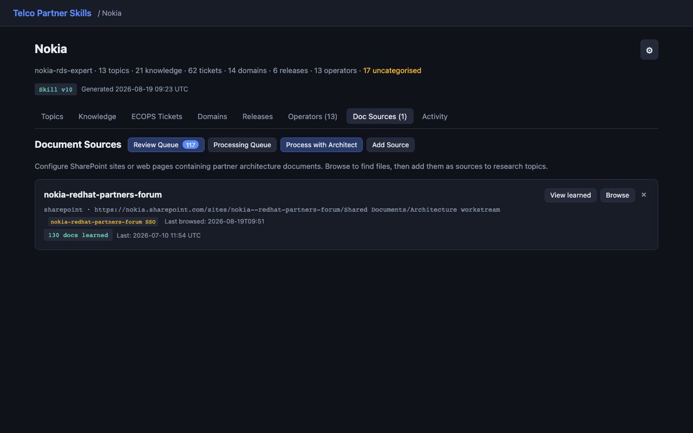
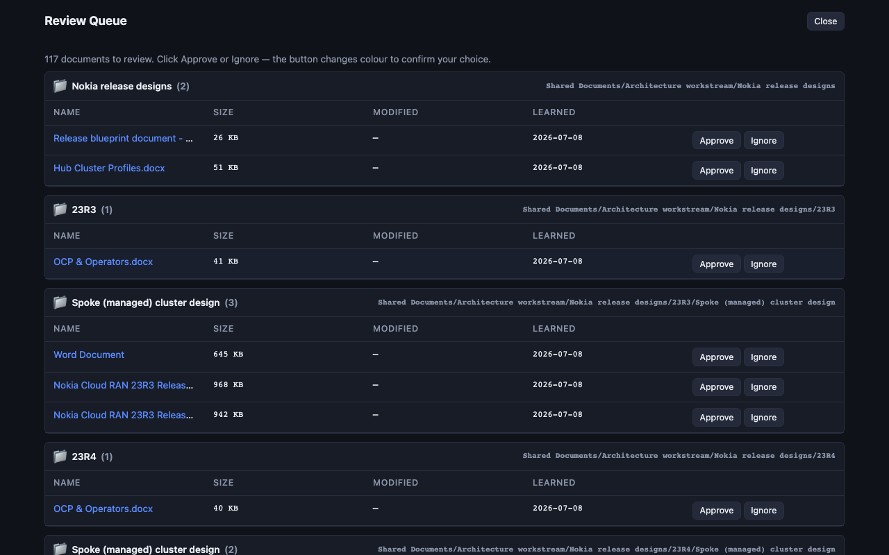
Research topics track ongoing investigations across sessions. Each topic has notes, linked sources, results, and linked Jira tickets. The Architect terminal automatically creates and updates topics as it works, providing persistent, scoped memory.
stateDiagram-v2
[*] --> Open : create topic
Open --> InProgress : start work
InProgress --> Resolved : findings captured
InProgress --> Parked : defer for later
Parked --> InProgress : resume
Resolved --> [*]
InProgress : Add notes, sources,
InProgress : results, linked tickets
| Component | Purpose |
|---|---|
| Notes | Research findings, decisions, questions, conversation logs. Types: Research, Question, Answer, Decision, Reference, Conversation. |
| Sources | URLs with auto-fetched content and tiered classification (T1 Red Hat, T2 Kubernetes, T3 Partner, T4 Community). |
| Results | Deliverables produced: documents, presentations, links, reports. |
| Linked Tickets | Related Jira tickets with relationship types (Related, Created, Blocking, Resolved by). |
| Interaction Log | Automatic log of Architect terminal prompts and responses for this topic. |
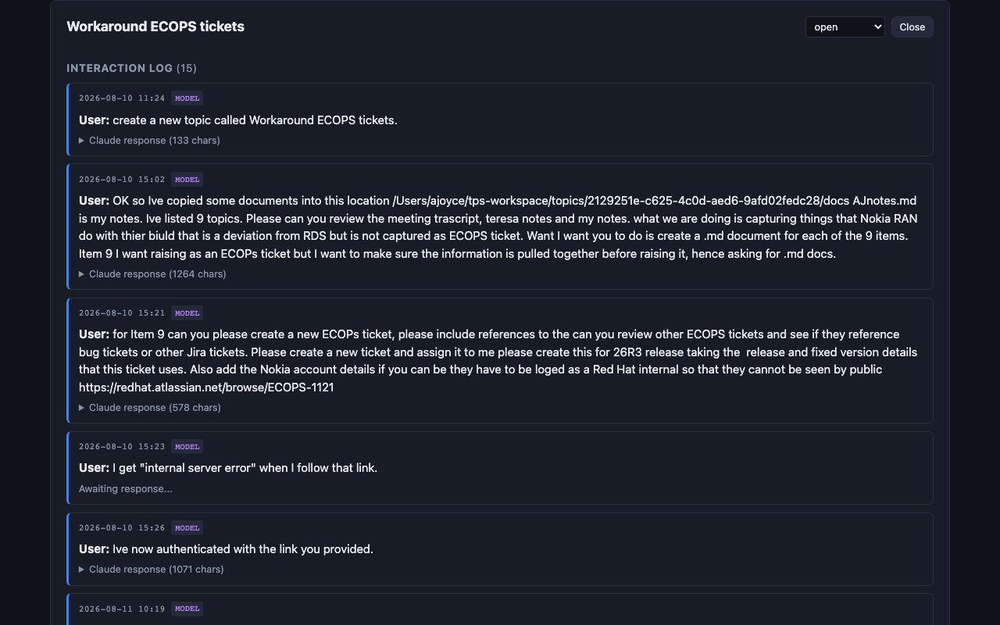
Skill generation packages all partner data into a OpenAI Architect skill directory. The generated skill gives Claude full context about the partner's architecture, support exceptions, releases, and knowledge.
On the partner page, click the config dropdown and select Generate Skill.
A modal appears showing the output path and the install command. Copy the ln -sf command.
Run the command in your terminal to install the skill:
ln -sf /path/to/output/<partner>-rds-expert ~/.claude/skills/<partner>-rds-expert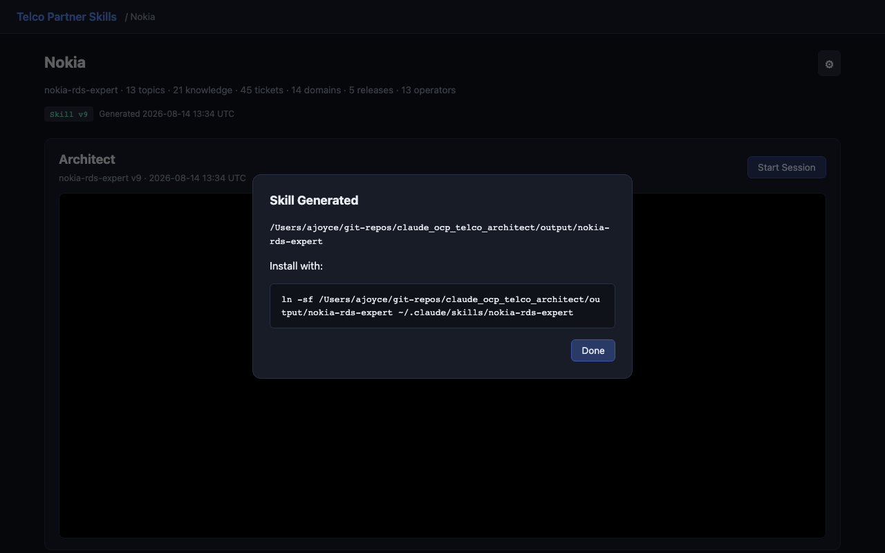
<partner>-rds-expert/
├── SKILL.md Skill manifest (persona, guardrails, API reference)
├── OPENAI.md Terminal context (relative paths)
├── README.md Installation instructions
└── reference/
├── <partner>-releases.md Release mapping + operator version pins
├── support-exceptions.md ECOPS tickets organised by domain
├── knowledge.md Curated knowledge entries
├── partner-documents.md Learned document extracts
└── response-template.md Response structure templateThe partner page header shows when the skill was last generated and whether data has changed since. If you see an "outdated" badge next to the skill version, re-generate the skill to capture recent changes.
The Architect terminal is an embedded OpenAI Architect session on each partner page. It runs inside the generated skill directory, giving Claude full access to partner context — support exceptions, knowledge entries, release mappings, and learned documents.
On the partner page, click Start Session in the Architect section. The terminal connects via WebSocket and launches OpenAI Architect with the partner's skill loaded.
Type prompts directly in the terminal. Claude has access to all partner reference files and can query the TPS REST API to create topics, add knowledge, and log interactions.
Click End Session to close the terminal when done.
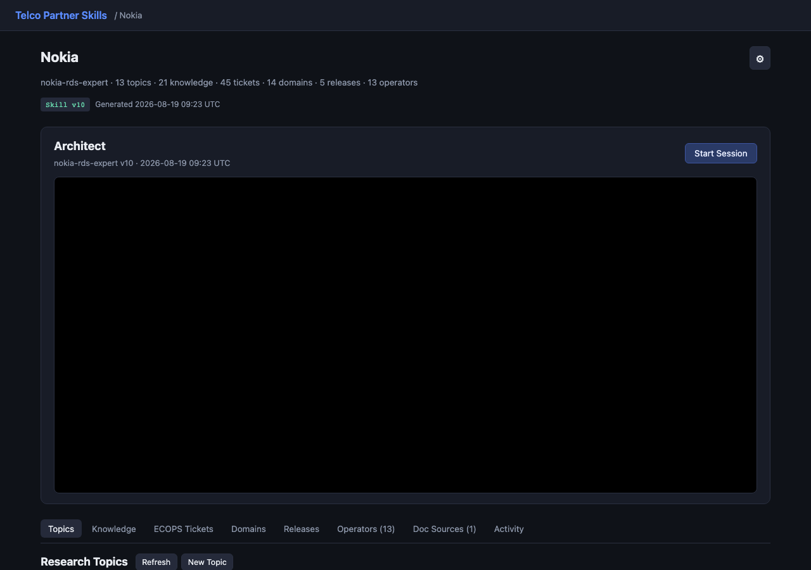
When the Architect is working on a research topic, interactions are automatically logged to the topic's interaction log via lifecycle hooks. The partner page shows which topic is currently active. This provides persistent memory across sessions — when you resume a topic later, the Architect can review previous interactions and notes.
TPS automatically backs up the SQLite database and workspace directory on a daily schedule. Backups are validated with SQLite PRAGMA integrity_check before being accepted, ensuring every backup is restorable.
~/tps-workspace tree including research results, working files, and interaction logsBoth are bundled into a single .zip file.
A backup runs automatically when TPS starts, following this retention scheme:
| Day | Backup File | Retention |
|---|---|---|
| Monday | weekly_YYYY-MM-DD.zip | Last 4 weeks retained |
| Tuesday – Friday | daily.zip | Overwritten each day |
| Saturday – Sunday | No automatic backup | |
This provides up to 4 weeks of recovery points via Monday snapshots, plus a rolling daily backup for the current week.
Open Settings from the dashboard and click Backup Now in the Backups section. Manual backups are saved as manual_YYYYMMDD_HHMMSS.zip and are never automatically deleted.
Open Settings from the dashboard.
Click Restore… and select a .zip backup file.
Confirm the restore when prompted. The backup is validated before any changes are made.
The page reloads automatically with the restored data.
For cron jobs or scripted backups, use the standalone script:
./scripts/backup.sh # Default: saves to data/backups/
./scripts/backup.sh /mnt/nas/tps # Custom destinationThe script uses SQLite's .backup command for a safe online copy, validates the result, and bundles the workspace into the zip.
All backups are stored in data/backups/ within the project directory. To download a backup, open Settings and click the filename link in the backup list.
TPS_MASTER_KEY to decrypt Jira tokens and auth source credentials stored in the database.
TPS binds to 127.0.0.1 (localhost only) by default. No authentication is required for local development — the app is only accessible from your machine.
export TPS_SECRET=your-password-here
./scripts/start.shAll routes redirect to /login until authenticated. The WebSocket terminal returns 403 for unauthenticated requests.
# Generate a Fernet key (one-time)
python3 -c "from cryptography.fernet import Fernet; print(Fernet.generate_key().decode())"
export TPS_MASTER_KEY=<key from above>Jira API tokens and auth source credentials are encrypted with the Fernet key before storage in SQLite. Existing plaintext rows are encrypted on next save.
TPS sets the following headers on all responses:
| Header | Value |
|---|---|
Content-Security-Policy | Restricts scripts/styles to self, blocks framing and object embeds |
X-Content-Type-Options | nosniff |
X-Frame-Options | DENY |
Referrer-Policy | same-origin |
All user-supplied content rendered via JavaScript is escaped through a dedicated esc() function before innerHTML insertion. This covers topic titles, directory names, breadcrumbs, and error messages — preventing cross-site scripting from stored or reflected content.
The SQLite database is created with mode 0600 (owner read/write only). This prevents other users on a shared system from reading partner data, Jira tokens, or auth credentials stored in the database.
All Python dependencies in requirements.txt are pinned to exact versions (==) to prevent supply-chain attacks via malicious package updates. Run pip install --upgrade deliberately when updating dependencies.
Each deployment is single-user. No data sharing between partners or users. Credentials and commercially sensitive information stay local to the machine.
TPS_SECRET and TPS_MASTER_KEY.
./scripts/start.sh # Start
./scripts/stop.sh # Stopdocker-compose up -dThe container runs as a non-root user (tps), exposes port 8000, and persists data to a /data volume. Set TPS_SECRET and TPS_MASTER_KEY via environment variables in your compose file or .env.
A service unit is provided at scripts/tps.service:
sudo cp scripts/tps.service /etc/systemd/system/
# Edit the service file to set paths and environment variables
sudo systemctl enable --now tps| Problem | Solution |
|---|---|
| Architect terminal won't start | Ensure OpenAI Architect CLI is installed and authenticated (OPENAI_API_KEY configured). Generate a skill first — the terminal requires a skill directory to exist. |
| "Skill outdated" badge shown | Data has changed since the last skill generation. Click config → Generate Skill to rebuild. |
| Jira sync returns no tickets | Check the project key and version prefix in Jira Settings. In API Key mode, verify the token has read access to the project. Check the browser console for error details. |
| Jira not working in MCP mode (terminal) | The Atlassian MCP server must be connected and authenticated in your OpenAI Architect — see 3.2.1. Run /mcp to check atlassian is connected; if not, register it (Configure the OpenAI Jira tool --transport http atlassian https://mcp.atlassian.com/v2/mcp) and authenticate via the browser OAuth flow. Credentials are per-user — each colleague must do this on their own machine; nothing is copied from another user. |
| SharePoint auth fails | Auth cookies expire. Delete the auth source and re-add it to trigger a fresh browser login. Ensure Playwright is installed (playwright install chromium). |
| Port already in use | Set a different port: TPS_PORT=9000 ./scripts/start.sh. Or stop the existing instance: ./scripts/stop.sh. |
| Document learning is slow | Large documents (PDFs, PPTX) take time to extract. The progress bar shows extraction status. Consider learning documents in batches. |
| Login page appears unexpectedly | TPS_SECRET is set. Either enter the password or unset the variable for local development. |
| Encryption errors after restart | The TPS_MASTER_KEY must be the same key used when credentials were encrypted. If lost, delete and re-enter Jira tokens and auth sources. |